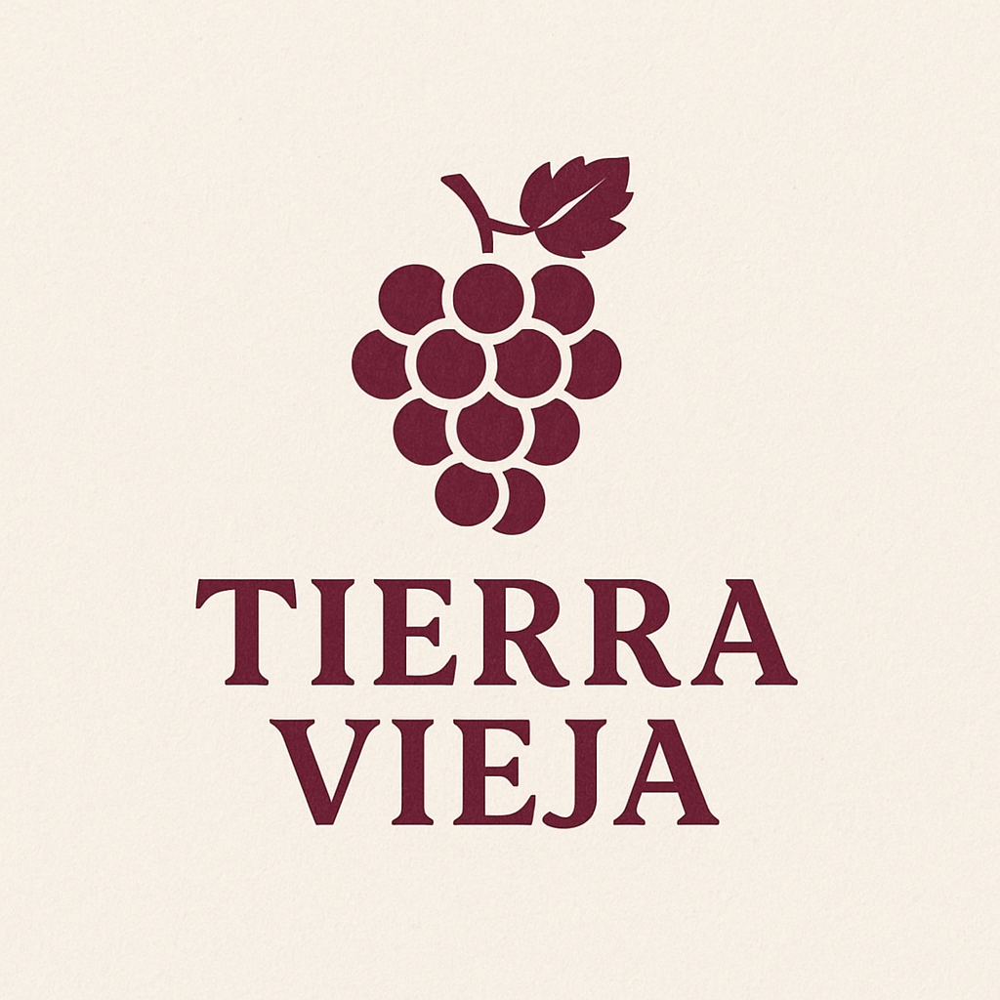
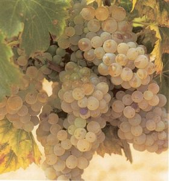

Descubre su Dulzura
La cepa Moscatel de Alejandría es sinónimo de calidez mediterránea y perfumada delicadeza. Cultivada bajo la atenta luz solar de Cariñena, sus uvas se dejan sobremadurar en la cepa hasta alcanzar una concentración natural de azúcares y aromas florales verdaderamente asombrosa.
El resultado son vinos naturalmente dulces, golosos y muy expresivos. Un verdadero diamante ámbar que envuelve el paladar en un final largo y persistente, perfecto para grandes celebraciones y momentos de pura indulgencia.

La intensidad floral que te embriaga
El aroma primario inconfundible y fresco del moscatel, transportando los sentidos a prados y jardines primaverales.
Al madurar intensamente, se captan profundas e intensas notas de fruta deshidratada dulce y compotada.
Aporta su característica textura y un envolvente aroma meloso que lo convierte en pura seducción líquida.
Suaves reflejos a piel de naranja desecada que logran equilibrar el conjunto dándole un sutil toque de frescor.
La esencia de nuestro vino dulce
| Variedad | Moscatel de Alejandría (Vitis vinifera) |
| Origen | Cuenca del Mediterráneo Oriental |
| Denominación | D.O. Cariñena, Aragón (España) |
| Vendimia | Manual tardía, garantizando la sobremaduración en cepa |
| Elaboración | Parada de fermentación para preservar los azúcares naturales de la uva |
| Graduación | 15,0 % Vol. |
| Temperatura | Servir frío, de 6 a 8 °C |
| Maridaje | Postres, hojaldres, tartas de frutas, foie y quesos muy curados o azules |
Añade todo el dulzor del Moscatel a tus momentos más especiales.
Ver en la Tienda →